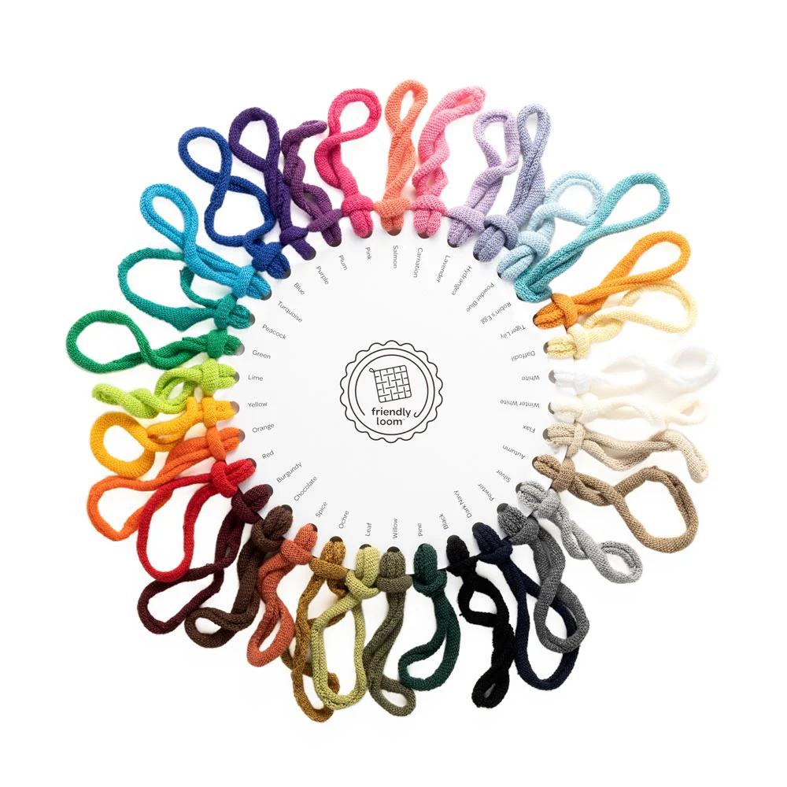
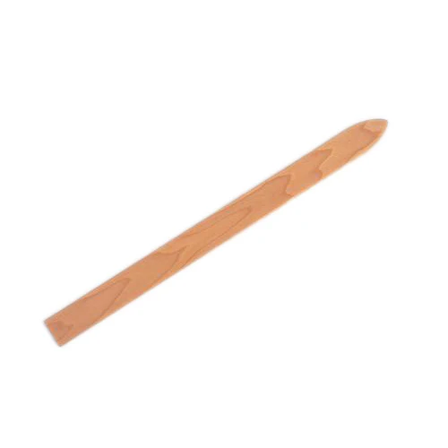
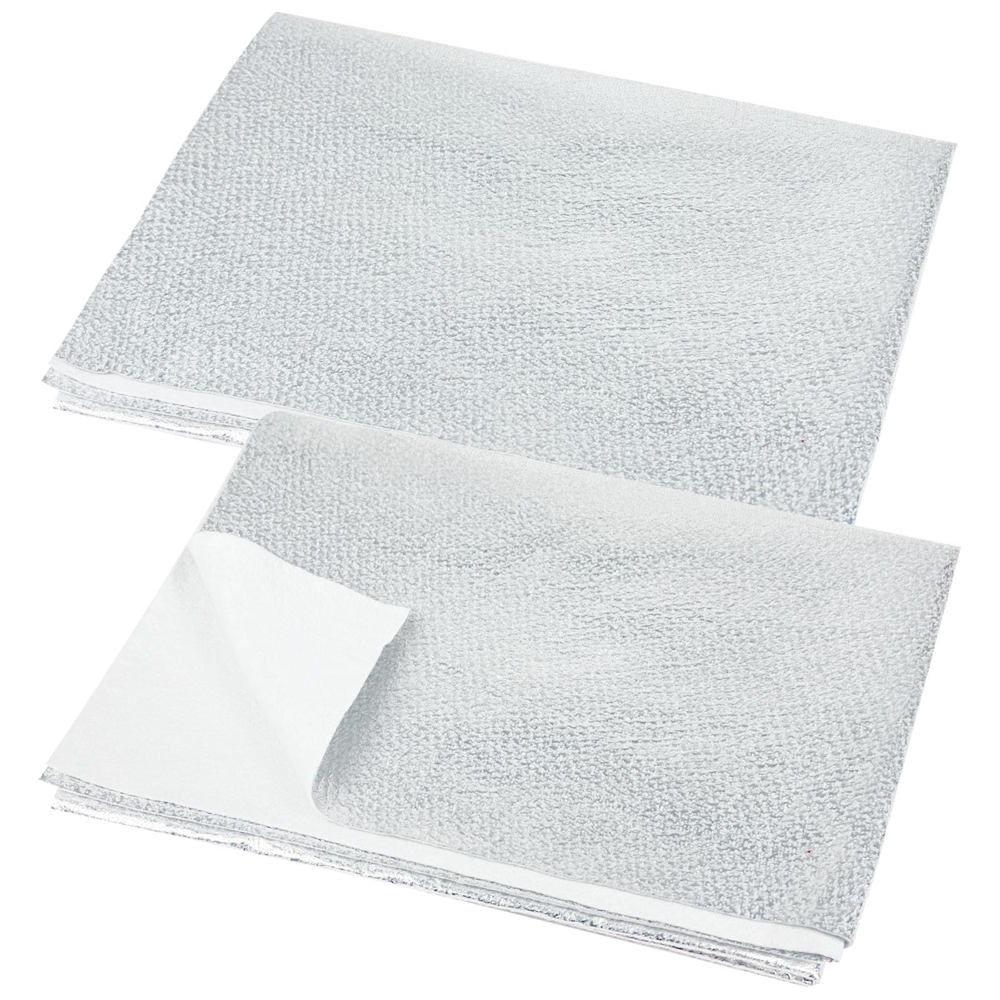

What We Use
Our potholders are crafted with care using the finest materials. Every item combines durability, heat resistance, and beauty to bring both function and style to your kitchen.

Premium Cotton Loops
Soft, durable, and heat-resistant for lasting protection. Sourced from trusted suppliers.

Quality Tools
Crafted using traditional looms to ensure tight, even weaves.

Heat-Resistant Batting
Added to some designs for extra protection against hot pans.
For a supplier list and recommended cotton loops, see this supplier.